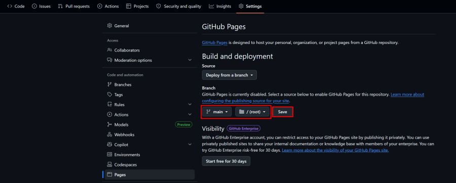
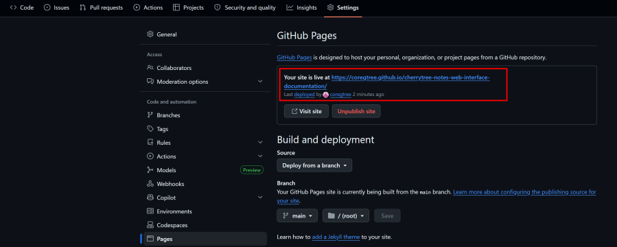

There is no guaranteed way to keep your website private with GitHub Pages but there are a few ways to reduce
your websites visibility. If you would like a more private setup you will need a website host that supports
an actual server and then add authentication to your website.
GitHub Pages uses jekyll which is not compatible with all file names generated by cherrytree,
causing some pages not to load if jerkyll is not disabled using this file.
indexing of the site by search engines:
User-agent: *
Disallow: /
<meta name="robots" content="noindex, nofollow">
For example: mynotes-we8932ajk32. This random string is to prevent someone from guessing the sites URL.
You can upload the files directly using the GitHub website or initialize a git repo inside the sites root folder and
push the repo to github.
Note: You will need a GitHub Pro subscription on your account ($4 a month) for your repo to
remain private while hosting with github pages. See: https://github.com/settings/billing/licensing

After a few minutes you will see that the site is live when you refresh the page:

Master Management Repo Setup
If you have multiple note repos it will be a long process to update the “master-script.js” and
“master.css” files with a new web interface release. Follow these stetps to setup a master repo.
as private.
var script = document.createElement('script');
script.src = 'https://YOURUSERNAME.github.io/MASTERREPO/master-script.js';
document.head.appendChild(script);
@import url("https://YOURUSERNAME.github.io/MASTERREPO/master.css");
using this master repo.